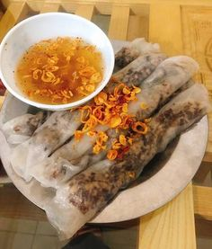

Tổng Hợp Những Món Ăn Việt Nam Nổi Tiếng Thế Giới
Tác giả: Nguyễn Văn A - Ngày đăng: 04/12/2024

Ẩm thực Việt Nam từ lâu đã gây ấn tượng mạnh mẽ trên bản đồ ẩm thực quốc tế nhờ sự kết hợp hài hòa giữa hương vị, nguyên liệu tươi ngon và cách chế biến tinh tế.
Dưới đây là những món ăn Việt Nam nổi tiếng và được yêu thích trên toàn thế giới:
Phở
Phở, biểu tượng ẩm thực Việt Nam, là món ăn không thể bỏ qua khi nhắc đến văn hóa Việt. Món ăn gồm bánh phở mềm mịn, nước dùng thanh ngọt được hầm từ xương bò hoặc gà, kết hợp với các loại gia vị như quế, hồi, gừng, và hành. Phở bò và phở gà là hai phiên bản phổ biến nhất, và cả hai đều được yêu thích từ đường phố Hà Nội đến các nhà hàng cao cấp tại Paris hay New York.
2. Gỏi Cuốn
Gỏi cuốn là món ăn nhẹ, thanh mát, với lớp bánh tráng cuốn bên ngoài và nhân tôm, thịt, bún, cùng các loại rau sống bên trong. Khi ăn, gỏi cuốn thường được chấm với nước mắm pha hoặc nước chấm đậu phộng, tạo nên hương vị độc đáo mà không ngán.
3. Bánh Mì

Bánh mì Việt Nam là một trong những món ăn đường phố ngon nhất thế giới. Với lớp vỏ bánh giòn tan, nhân bên trong gồm thịt nguội, pate, thịt nướng, kèm theo rau sống, dưa chua, và nước sốt đặc trưng, bánh mì đã chinh phục khẩu vị của nhiều thực khách quốc tế. Đây là món ăn nhanh gọn, tiện lợi, và đầy đủ dinh dưỡng.
4. Bánh Ép

Bánh ép là một món ăn đặc sản của miền Trung (như Huế), với lớp bánh mỏng, dai dai từ bột lọc, kết hợp thịt, trứng, hoặc topping đa dạng. Bánh được ép nóng tạo mùi thơm hấp dẫn. Món này chấm nước mắm chua ngọt rất hợp vị.
Bài viết gần đây:
Bánh cuốn Việt Nam lọt top 10 món ăn hấp dẫn nhất thế giới
Tác giả: Nguyễn Văn Văn A
Miến trộn – ngõ 252 Tây Sơn, Đống Đa
Tác giả: Nguyễn Văn Văn A

Bò nướng lá lốt & Bò nướng mỡ chài 330 Bạch Mai
Tác giả: Nguyễn Văn Văn A